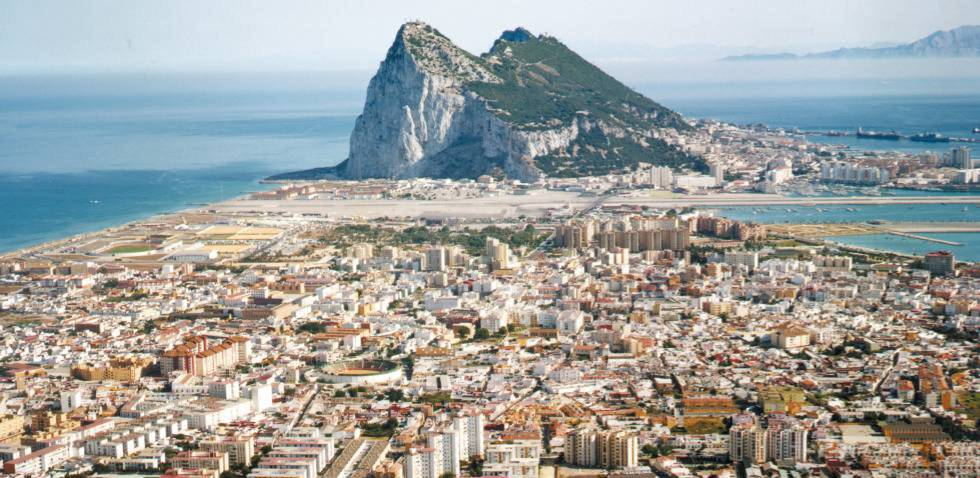
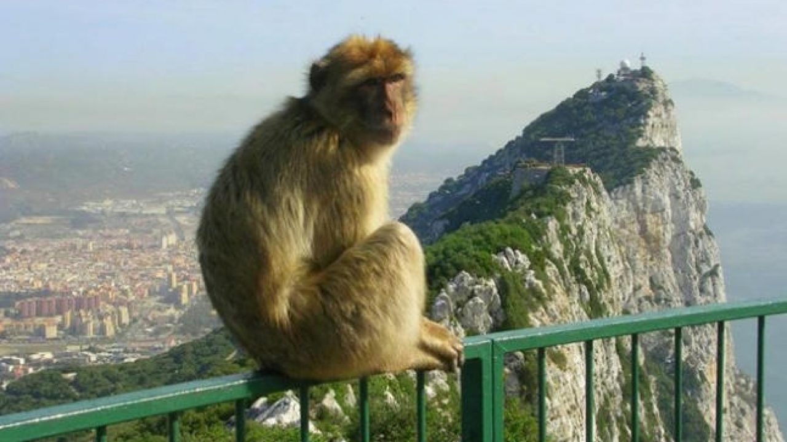

INTRODUCCIÓN
Gibraltar un territorio británico de ultramar situado en una pequeña península del extremo sur de la península ibérica, haciendo frontera únicamente con España, país que reclama su soberanía.Para la Organización de las Naciones Unidas, Gibraltar, como colonia, es uno de los territorios no autónomos bajo supervisión de su Comité Especial de Descolonización.
Atendiendo al artículo X del Tratado de Utrecht, "la ciudad y castillos de Gibraltar, juntamente con su puerto, defensas y fortalezas" en 17137 serían una propiedad a perpetuidad de la Corona británica en territorio de jurisdicción española, debiendo retornar a España si el Reino Unido renunciase o enajenase de alguna manera dicha propiedad. El istmo entre el peñón y las otras fortificaciones españolas es para España territorio ocupado ilegalmente, atendiendo a su interpretación del tratado.

GEOLOCALIZACIÓN
Gibraltar está situado en el extremo meridional de la península ibérica, al este de la bahía de Algeciras, y se extiende sobre la formación geológica del peñón de Gibraltar, península que domina la orilla norte del estrecho homónimo, comunicando el mar Mediterráneo y el océano Atlántico. Alberga una población de 33 140 habitantes en una superficie de menos de 7 km², con una economía basada en el sector de servicios, principalmente como centro financiero, turístico y puerto franco. Aprovechando su privilegiada posición estratégica, cuenta con una base aeronaval de las Fuerzas Armadas Británicas.
UN POCO DE HISTORIA
Gibraltar fue conocida en la antigüedad como promontorio o monte Calpe (en latín: Mons Calpe), una de las dos míticas columnas de Hércules, y posteriormente renombrada como derivación del árabe Ẏabal Tāriq, o montaña de Tariq, en recuerdo del general Táriq ibn Ziyad, quien dirigió el desembarco en este lugar de las fuerzas del Califato Omeya de al-Walid I en 711. Fue escenario de combates en los siglos XIV y XV, en el marco de la Reconquista, e integrada finalmente a la Corona de Castilla en 1462. En 1704 fue tomada por una escuadra angloholandesa en apoyo del Archiduque Carlos, pretendiente durante la Guerra de Sucesión Española, al término de la cual, las Coronas británica y española firmaron el Tratado de Utrecht en 1713. Desde entonces, el devenir político de Gibraltar ha sido objeto de controversia en las relaciones hispano-británicas.

La Guerra de Sucesión española fue un conflicto tanto internacional como nacional entre los partidarios de Carlos de Absburgo y Felipe de Borbón.
Partidarios de la Casa de Borbón
- Francia
- La Corona de Castilla
Partidarios de la Casa de los Austrias
- Inglaterra
- Austria
- Portugal
- Las Provincias Unidas
- Los Estados Alemanes
MACACA SYLVANUS
El macaco de Berbería (Macaca sylvanus), también llamado mono de Gibraltar y mona rabona, es una especie de primate catarrino de la familia Cercopithecidae que se encuentra actualmente en algunas zonas reducidas de los Montes Atlas del norte de África y en el Peñón de Gibraltar, en el sur de la península ibérica. Es el único primate (con excepción de los humanos) que puede encontrarse actualmente en libertad en Europa, y el único miembro del género Macaca que vive fuera de Asia.

| Mono de Gibraltar |
| Reino |
Filo |
Clase |
Orden |
Suborden |
Infraorden |
Superfamilia |
Familia |
Género |
Especie |
| Animalia |
Chordata |
Mammalia |
Primates |
Haplorrhini |
Simiiformes |
Cercopithecoidea |
Cercopithecidae |
Macaca |
M.sylvanus |
Los monos de de gibraltar aun recuerdan su pasado y también piden la soberanía española como muestran estas imájenes inéditas
Monos de Gibraltar españoles - Virales de Facebook #8 ...
Sin embargo estan siendo acallados con miles de libras esternilas